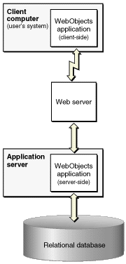
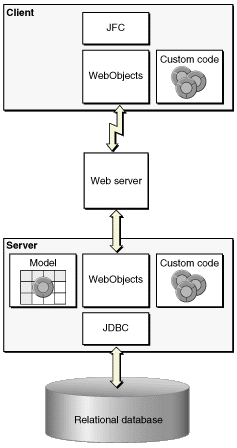
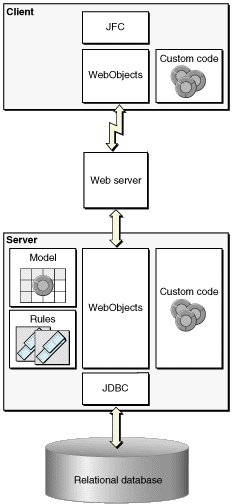

| PATH |

The Java Client architecture differs from the HTML-based WebObjects architecture in that it's distributed across client and server systems as shown in Figure 6-4. The server-side portion interacts with a database server as in HTML-based WebObjects applications, and the client-side portion, in addition to providing the application's user interface, can also contain non-sensitive business logic.
Figure 6-4 Java Client's distributed, multitier architecture
Figure 6-5 elaborates the architecture of Java Client applications.
Figure 6-5 Architecture of a Java Client application
The architecture of Direct to Java Client applications is slightly more complex than that of non-direct Java Client applications, as illustrated in Figure 6-6. It includes the Rule System—the part of the server-side application responsible for dynamically generating the user interface and defining its behaviors.
Figure 6-6 Architecture of a Direct to Java Client application
The client and server applications have duties other than merely providing the user interface and database access—for example, each can contain business logic and each communicates with the other through a Web server. However, the database access/user interface division is significant because it provides a richness of user interface without compromising security or performance.
Sensitive business logic and database connection logic is provided only by the server application. Because compiled Java on the client side can be decompiled, the client application is limited to user interface code and nonsensitive business logic. At the same time, the ability to put some of the business logic on the client (any nonsensitive logic) improves performance. By performing as much processing as possible on the client (such as field validation), round trips to the server are limited.
To be clear, the Java Client architecture duplicates the graph of enterprise objects on the client application so the graph and its management occur on both server and client. WebObjects handles all client-server communication and distributes the object graph across client and server.